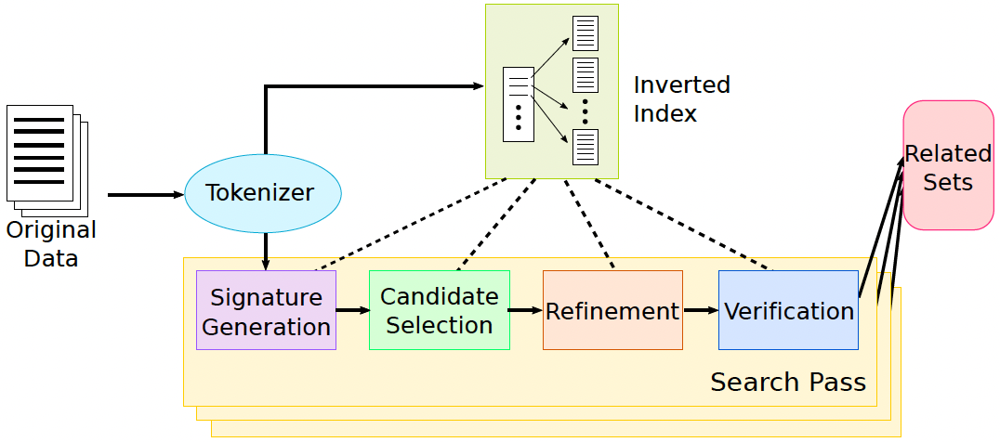

🦋 LSDIPro SS2025
📄 SilkMoth: An Efficient Method for Finding Related Sets
A project inspired by the SilkMoth paper, exploring efficient techniques for related set discovery.
👥 Team Members
- Andreas Wilms
- Sarra Daknou
- Amina Iqbal
- Jakob Berschneider
📘 Project Documentation
🔁 Core Pipeline Steps

Figure 1. SILKMOTH pipeline framework. Source: Deng et al., "SILKMOTH: An Efficient Method for Finding Related Sets with Maximum Matching Constraints", VLDB 2017.
Licensed under CC BY-NC-ND 4.0.
1. Tokenization
Each element in every set is tokenized based on the selected similarity function:
- Jaccard Similarity: Elements are split into whitespace-delimited tokens.
- Edit Similarity: Elements are split into overlapping
q-grams (e.g., 3-grams).
2. Inverted Index Construction
An inverted index is built from the reference set R to map each token to a list of (set, element) pairs in which it occurs. This allows fast lookup of candidate sets that share tokens with a query.
3. Signature Generation
A signature is a subset of tokens selected from each set such that:
- Any related set must share at least one signature token.
- Signature size is minimized to reduce candidate space.
Signature selection heuristics (e.g., cost/value greedy ranking) are used to approximate the optimal valid signature, which is NP-complete to compute exactly.
4. Candidate Selection
For each set R, we retrieve from the inverted index all sets S that share at least one token with R’s signature. These become the candidate sets for further evaluation.
5. Refinement Filters
Two filters reduce false positives among the candidates:
- Check Filter: Uses an upper bound on similarity to eliminate sets that cannot meet the threshold.
- Nearest Neighbor Filter: Approximates the maximum matching score using the nearest neighbor similarity for each element in
R.
6. Verification via Maximum Matching
For the remaining candidates, we compute the maximum weighted bipartite matching between elements of R and S, using the chosen similarity function as edge weights.
Only sets whose matching score meets or exceeds a threshold δ are considered related.
🧪 Modes of Operation
- Discovery Mode: Compare all pairs of sets to find all related set pairs.
Use Case: When you want to check which sets (e.g., columns in a database) are related to a specific reference set. - Search Mode: Given a reference set, find all sets related to it.
Use Case: When you want to find all related set pairs in a dataset, for tasks like schema matching or entity deduplication.
📐 Supported Similarity Functions
- Jaccard Similarity
- Edit Similarity (Levenshtein-based)
- Optional minimum similarity threshold
αcan be enforced on element comparisons.
Installing from source
- Run
pip install src/to install - (optional) Run
python -m unittest discover -s src/silkmoth/test -p "*.py"to execute the unit tests
Running the experiment
- Run
python experiments/run.pyto execute the experiment